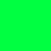
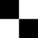

[ 前書き ]
このゲームは、Unityインターハイ2019ゴールドアワード受賞作品です。 ダウンロードの必要がなく世界中のどこからでもブラウザ上で遊ぶことができます。 さらにゲーム開始時に個人のアカウントを作成するので、いつでもGameMode別の世界ランキングで自分の順位を確認することができます。 マルチプレイでは世界中のプレイヤーと対戦することができ、自分以外のプレイヤーがいない場合はAIと対戦して遊ぶことができます。 これからも日々改良していく予定です。GameModeもSkillも増やしていきたいと強く思っています。
[ 作者について ]
Unityインターハイ2019でゴールドアワードを受賞した高校3年生です。 毎日Unityを触っているので「毎日Unity」という名前でやっています。 モデリングと シナリオを考えるのが少し苦手です。でもゲーム開発はとても好きなので、頑張って苦手を克服したいです。 現在は、「CubePop」というアプリを開発しています。
[ お知らせ ]
このサイトは、即席で作ったサイトなので誤字を多く含むかもです。
[ 目次 ]
・ゲームの遊び方
・公平性について
・Skillについて
・GameModeについて
・操作方法
・Optionsについて
・Customizeについて
・その他の質問など
[ シングルプレイでの遊び方 ]
ゲームを開始すると、141種類あるブロックの内のいずれかが落下してきます。 これは決してランダムではなく、全プレイヤーを公平にするための法則を考え適応させています。 落下してくる全てのブロックは、落下し終わると形が崩れます。 プレイヤーは、落下してくるブロックを操作し、同色のブロック同士をつなげて左右の壁を横断させることでブロックが消去され、スコアを稼ぐことができます。 ブロックを消した量によって得られるスコアは変動します。 さらにこのゲームには様々な難易度のSkillが存在し、ゲーム中にこれらのSkillを繰り出すことによってボーナススコアを稼ぐことができます。 難しいSkillになればなるほど得られるスコアは高くなります。 ブロックを赤いライン以上積み上げてしまうとゲームオーバーです。 シングルプレイで遊べる３つのGameModeでは、これらのルールでスコアを稼ぎ、全世界で最高スコアを競い合って遊ぶことができます。
[ マルチプレイでの遊び方 ]
マルチプレイで遊ぶ際は、シングルプレイで遊ぶ時にはない攻撃ルールが追加されます。 マルチプレイは、スコアではなくポイントを稼ぎます。ポイントは最高30000ポイント稼ぐことができます。 プレイヤーは、10000ポイントを消費し相手に攻撃することができます。 攻撃されたプレイヤーには、お邪魔ブロックが出現します。 攻撃するタイミングによっては攻撃されたプレイヤーが有利になる場合もあるので、タイミングを見極める必要があります。 マルチプレイで遊べる２つのGameModeでは、これらのルールで相手プレイヤーよりも長く生き残れるかを競い合って遊びます。 初めてプレイする人は、シングルプレイで練習してからマルチプレイで遊ぶことを勧めます。
[ ブロックとキューブの違い ]
まず、公平性を説明するにあたって「ブロック」と「キューブ」の違いを説明します。 プレイヤーが操作できるのがブロックで、操作できないのがキューブです。 ブロックはキューブの集まりであり、落下し終わると崩れてキューブになってしまいます。 下の画像を例に挙げると、赤いキューブの数が６個のブロックということです。
[ ブロックの種類 ]
GameModeによっては最大で141種類(形47種類 × 色3種類 = 141種類)のブロックが出現します。 下の画像がこのゲームに存在する141種類中47種類のブロックの一覧です。 1番キューブが少ないブロックは1個です。1番キューブが多いブロックは9個です。 下の画像の全てのブロックには色がついていますが、ブロックの形と色は、必ずしもこの画像通りだとは限りません。
[ 公平じゃないの！？ ]
上の画像にあるブロックは、赤、緑または青の色がついた状態で落下してきます。 そしてキューブは、同じ色同士でしか消去することができません。 だから「赤のブロックがすごい連続で落下してくるけど青のブロックが全く落ちてこない。」だったり「緑のブロックがばかり落ちてきて赤と青のブロックが少ししか落ちてこない。」 などのことが起きてしまうと、プレイヤー間で公平ではなくなってしまいます。つまり有利なプレイヤーと不利なプレイヤーが出てきてしまうということです。 まとめると、赤、緑そして青のブロックがそれぞれ等しい割合で落下してこないとプレイヤー同士は公平ではなくなってしまうということです。
[ どうすれば公平になるの？ ]
上の画像内のすべてのブロックをキューブを含む数が少ない順でわかりやすく並べると下の画像のようになります。 色、形を考慮しないで、単純にキューブを含む数が異なるブロックを一個ずつ選んだとすると合計で9種類のブロックが選べると思います。 なぜここでキューブを含む数が異なる9種類のブロックを選んだかというと、キューブを含む数が同じブロックが連続で出現するのを避けるためです。 この9種類のブロックが含むキューブの数を全部をたすと、「1 + 2 + 3 + 4 + 5 + 6 + 7 + 8 + 9 で 45」になります。 ブロックの色の種類は赤、緑、青の3種類だから3で割ると、「45 ÷ 3 で 15」になります。 つまりキューブを含む数が異なる9種類のブロックが落下する毎に、落下した9種類のブロックが含むキューブの数が赤、緑、青でそれぞれ合計で15個になるようになれば良いということです。 これが実現できればキューブを含む数が同じブロックが連続で落下してくることもなく、キューブの色の数もそれぞれ等しくなるわけだからプレイヤー間で公平になります。 下の画像の全てのブロックには色がついていますが、ブロックの形と色は、必ずしもこの画像通りだとは限りません。
[ 例 ]
理解を深めてもらうためにここで1つ例を挙げたいと思います。 キューブを含む数が異なるブロックを9種類上の画像から選んで、下の画像のように色を付けたとします。 下の画像のように色がついていたとして赤、緑、青のキューブの数をそれぞれたしてみてください。 赤、緑、青、それぞれキューブの数の合計がそれぞれ15になりますよね？ブロックが9個落下してくる都度このようになっていれば、プレイヤー間で公平になります。
[ AllClear ]
フィールド上のキューブを全て消すたびに500のボーナススコアが得られます。一番簡単なSkillです。
「気づいたらできてた！」なんてことも良くあります。
[ Equal ]
キューブを消した時に赤、緑、青のキューブの数が等しくなるたびに1500のボーナススコアが得られます。
簡単そうで難易度の高いSkillです。
[ Combo ]
1つのブロックを設置することでキューブを連鎖的に消去するたびに1000のボーナススコア得られます。
このSkillをどんどん繰り出せるようになると、マルチプレイで遊ぶ時に有利になれます。
ボーナススコアが得られるのは、2Comboからなので注意してください。
[ Ren ]
ブロックを設置するたびにキューブを消去すると、その都度750のボーナススコア得られます。
ボーナススコアが得られるのは、2Renからなので注意してください。
[ Double ]
2色のキューブを同時に消去するたびに2000のボーナススコア得られます。
かなり難しいSkillです。
[ Triple ]
3色のキューブを同時に消去するたびに3000のボーナススコア得られます。
難易度が高い分、得られるボーナススコアも多いです。
[ Normal ]
ブロックの種類は47種類で落下速度は普通です。10000スコア毎にブロックの落下速度が速くなります。このGameModeが基本です。
[ HighSpeed ]
Normalのブロックの落下速度が速くなったバージョン。とても難易度が高く、初心者にはお勧めできません...。
[ Retro ]
Normalのブロックの種類が7種類になったバージョン。Skillも組みやすいので練習するならこのGameModeがおすすめ！
[ VsAI ]
ブロックの種類は47種類でAIと対戦の練習ができるGameModeです。VsPlayerモードの練習に活用してください。
[ VsPlayer ]
オンライン対戦モードです。VsAIモードの相手がプレイヤーになったバージョンです。はっきり言ってこのモードが一番楽しいです。
オンライン対戦をするにはルームを作成する必要があります。パスワード有りで作成されたルームにはランダム参加ができません。
ルームを作成したプレイヤーは、20秒以内に2人目のプレイヤーがルームに参加してこなかった場合、メニューに戻ります。
[ メニューでの操作方法 ]
・W ： 上選択
・S ： 下選択
・Space/Enter ： 決定
[ シングルプレイでの操作方法 ]
・W ： ブロックのホールド
・D ： ブロックの右移動(長押しで連続移動)
・A ： ブロックの左移動(長押しで連続移動)
・E ： ブロックの右回転
・Q ： ブロックの左回転
・S ： ブロックの落下
・Space/Enter ： ポーズ
・↑ ： カメラの上移動
・↓ ： カメラの下移動
・→ ： カメラの右移動
・← ： カメラの左移動
・R ： カメラのを初期位置に戻す
[ マルチプレイでの操作方法 ]
・W ： ブロックのホールド
・D ： ブロックの右移動(長押しで連続移動)
・A ： ブロックの左移動(長押しで連続移動)
・E ： ブロックの右回転
・Q ： ブロックの左回転
・S ： ブロックの落下
・F ： 相手プレイヤーに攻撃
・↑ ： カメラの上移動
・↓ ： カメラの下移動
・→ ： カメラの右移動
・← ： カメラの左移動
・R ： カメラのを初期位置に戻す
[ VerticalFrame ]
フィールド上に縦線を追加します。追加することにより見やすくなります。
→
[ HorizontalFrame ]
フィールド上に横線を追加します。追加することにより見やすくなります。VerticalFrameと一緒に使うとさらに見やすくなるかもです。
→
[ CoordinateBlock ]
次に出てくるブロックの出現位置と向き、色を表示します。
→

[ GhostBlock ]
プレイヤーが動かしているブロックが落下して崩れた後の形を灰色で表示します。非常におすすめです。
→
[ CameraOperation ]
カメラ操作を許可します。3D酔いしたい方は是非！
→

[ BlockColor ]
ブロックの色を変更できます。
8種類の中から3つを選んでください。



[ BlockSkin ]
ブロックの模様を変更できます。
7種類の中から1つを選んでください。

[ YouTube ]
毎日UnityのYouTubeチャンネルへジャンプします。
[ Twitter ]
毎日UnityのTwitterのプロフィールへジャンプします。